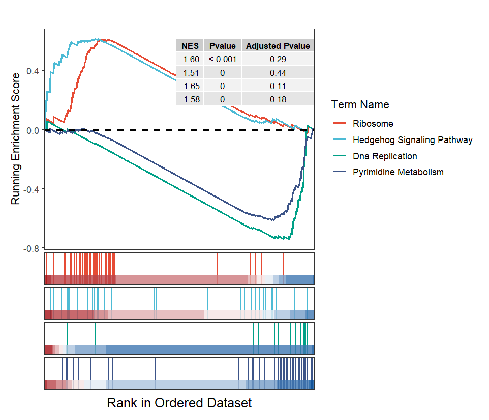

Chapter 6 Parse output results from GSEA software
GseaVis can also parse GSEA software output resluts and re-draw the data to supply a publication-quality plot.

6.2 Parse GSEA results
readGseaFile can parse the GSEA software output directory and return a list containing multiple results about enrichment:
intergrated <- readGseaFile(filePath = "kegg_analysis.Gsea/")
str(intergrated)
# $meta
# # A tibble: 40 × 11
# ID Description setSize enrichmentScore NES pvalue p.adjust qvalue rank leading_edge
# <chr> <chr> <dbl> <dbl> <dbl> <dbl> <dbl> <dbl> <dbl> <chr>
# 1 KEGG_DNA_REP… KEGG_DNA_R… 36 -0.742 -1.65 0.00196 0.108 0.1 5640 tags=72%, l…
# 2 KEGG_PYRIMID… KEGG_PYRIM… 97 -0.612 -1.58 0.00178 0.176 0.291 8892 tags=52%, l…
# 3 KEGG_AMINOAC… KEGG_AMINO… 41 -0.686 -1.55 0.00914 0.179 0.412 8244 tags=56%, l…
# 4 KEGG_CYSTEIN… KEGG_CYSTE… 34 -0.683 -1.49 0.0148 0.298 0.682 9190 tags=59%, l…
# 5 KEGG_HEMATOP… KEGG_HEMAT… 85 -0.596 -1.49 0.00515 0.257 0.715 4563 tags=26%, l…
# 6 KEGG_RNA_POL… KEGG_RNA_P… 28 -0.714 -1.49 0.0120 0.215 0.717 8772 tags=64%, l…
# 7 KEGG_RNA_DEG… KEGG_RNA_D… 59 -0.624 -1.48 0.00530 0.204 0.752 14222 tags=64%, l…
# 8 KEGG_PROTEAS… KEGG_PROTE… 46 -0.637 -1.48 0.0125 0.181 0.758 13047 tags=65%, l…
# 9 KEGG_PROXIMA… KEGG_PROXI… 23 -0.734 -1.47 0.0343 0.175 0.775 7113 tags=52%, l…
# 10 KEGG_CELL_CY… KEGG_CELL_… 124 -0.541 -1.45 0.00350 0.203 0.862 8600 tags=44%, l…
# # ℹ 30 more rows
# # ℹ 1 more variable: core_enrichment <chr>
# # ℹ Use `print(n = ...)` to see more rows
#
# $glist
# AC068790.9 AC135048.2 AC142381.2 DGKI TMEM265 RPL18P10
# 4.968889 4.951065 4.811294 4.624895 4.367372 4.308214
# MKRN9P NPNT C1orf21 TSPAN7 GOLGA8IP ADAMTS9
Check the resuts:
# check enrichment data
head(intergrated$meta[1:3,1:5])
# # A tibble: 3 × 5
# ID Description setSize enrichmentScore NES
# <chr> <chr> <dbl> <dbl> <dbl>
# 1 KEGG_DNA_REPLICATION KEGG_DNA_REPLICATION 36 -0.742 -1.65
# 2 KEGG_PYRIMIDINE_METABOLISM KEGG_PYRIMIDINE_METABOLISM 97 -0.612 -1.58
# 3 KEGG_AMINOACYL_TRNA_BIOSYNTHESIS KEGG_AMINOACYL_TRNA_BIOSYNTHESIS 41 -0.686 -1.55
# check gene lists
head(intergrated$glist)
# AC068790.9 AC135048.2 AC142381.2 DGKI TMEM265 RPL18P10
# 4.968889 4.951065 4.811294 4.624895 4.367372 4.308214
# check terms
head(intergrated$gset[1:3,])
# term gene
# 1 KEGG_DNA_REPLICATION DNA2
# 2 KEGG_DNA_REPLICATION POLE4
# 3 KEGG_DNA_REPLICATION POLE3Or you can also supply the path to gseaNb directlly:
setid <- c("KEGG_RIBOSOME",
"KEGG_HEDGEHOG_SIGNALING_PATHWAY",
"KEGG_DNA_REPLICATION",
"KEGG_PYRIMIDINE_METABOLISM")
# plot
gseaNb(filePath = "kegg_analysis.Gsea/",
geneSetID = setid[1])
Lets compare the other terms:
lapply(1:4, function(x){
gseaNb(filePath = intergrated,
geneSetID = setid[x],
addPval = T,
pvalX = 0.6,
pvalY = 0.6)
}) -> plist
# combine
cowplot::plot_grid(plotlist = plist,nrow = 1,align = 'hv')
Multiple terms plot:
# multiple terms
gseaNb(filePath = intergrated,
geneSetID = setid,
curveCol = ggsci::pal_npg()(4),
subPlot = 2,
addPval = T,
pvalX = 1,
pvalY = 1)
New style plot:
# new style plot
gseaNb(filePath = intergrated,
geneSetID = setid[1],
newGsea = T,
addGene = T,
markTopgene = T)
Multiple facet plot:
# multiple terms of new style
gseaNb(filePath = intergrated,
geneSetID = setid,
newGsea = T,
rmHt = T,
addPval = T,
pvalX = 0.9,
pvalY = 0.6)